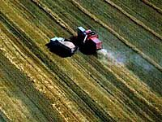

Harvesting
In August, green fields begin to turn varying shades of gold and rust. Harvest begins when the crop is sufficiently mature. In Saskatchewan, harvest is usually a two-stage operation: first swathing and then combining. Sometimes, though, swathing and combining are done in one operation by straight-combining, depending on the crop and weather requirements.
When swathing, the grain stems are cut 20 to 25 centimetres above the ground, and left in a swath or windrow. A swath is a strip of cut grain which lies on top of the stubble. The stubble holds the swath off the ground to allow air to circulate underneath it to dry and cure the grain.
If the weather is warm and dry, the grain should be ready to combine within seven to ten days. The combine then picks up the swath, beats the grain from the heads, and separates the grain from the straw. The straw is usually returned to the soil to help replenish its organic content. When the combine is full, farmers empty the grain into a truck and haul it to storage bins on the farm or directly to the nearest grain elevator.
[More on the Swather]
[More on the Combine]
Straw Management
Straw and residue (chaff) management is an important aspect of zero and minimum till, particularly if there is direct seeding. Straw management is necessary to deal with possible unfavourable effects
of heavy trash covers. The manner in which crops are harvested is important in trash management. Cutting width is determined by the machine used and the width of cuts during swathing or straight combining should be such to adequately spread the residue; and combine spreaders, choppers or deflectors should be able to spread the leftovers over the width of a cut. A harrowing operation shortly after combining can help to spread the straw. Poorly spread chaff can lead to lower germination of a new crop. Poor growth can be noticed in rowlike patterns on a field. This can occur if a seeder has difficulty penetrating the residue to deposit the seeds; or, if the soil temperature beneath the residue is
too cold. Producers can try to place seed into the ground through
heavy trash by using seeders with good furrowopening abilities
and designs which prevent them from becoming blocked. To overcome
cold soil temperatures, some producers have baled and removed
straw or carried out a tillage operation in the fall or spring,
to expose the soil for faster warming.
Allelopathy is a condition found in stubble that hampers the growth of a new crop. Mature plants, just before harvest, have a concentration of hormones which discourage any new plant growth. To a plant, these hormones are necessary to complete growth and seed production for that growing season and to prepare for dormancy. A number of these hormones may remain in the stubble or straw and reduce the growth of a new crop. The effects of allelopathy can be reduced by proper crop rotation, since the hormones of different crop varieties have minimal affect on each other.
Harvesting Equipment
The Swather - This implement can be a self-propelled, tractor-mounted or tractor-pulled machine which cuts plants and places them in a swath (windrow) on top of the stubble. Swathing is usually carried out before seeds are ready for actual separation from the rest of the plant. Swathing occurs before combining (unless straight-combining is used).
Swathing may be the choice rather than rather than "straight"combining because harvesting can occur earlier, select areas may be harvested (leaving immature plant to develop further) and losses due to insect, hail or frost damage may be reduced.
Some swathers may be adapted for doubleswathing, where they can lay one swath beside the previous swath. Where crops are light, this reduces pickup losses and makes better use of combine capacity and efficiency.
Swathers can be equipped with special pickup reels (fingers) to
lift up crops which are lodged or which normally grow close to
the ground. With other crops (canola, mustard...) a roller is
often trailed behind the swather to press the swath into the stubble
in order to protect the swath against the effects of the wind. Specifications of the swather such as reel positions and speeds, canvas speeds, platform angles and hitch adjustments effect swathing performance as well as the type of swaths produced.
The Combine
The combine is an implement with undergoes a series of operations during harvest. Combines may be either selfpropelled or pulltype.
The combine has the ability to:
- Pick-up swaths of grain - A special pick up assembly is used, and a feed conveyor draws the grain in and moves it to a cylinder.
- Thresh and separate - The combine separates the grain from the stems. Most of the seeds are separated from the straw at the cylinder/concave and fall to a chaffer/sieve. The straw continues under or over a beater. In certain combines, further separation takes place
along a series of straw walkers and sieves. Other combines have
two revolving cylinders through which the straw passes. Rub bars
or tines complete the threshing action as the straw moves through.
- Clean and store - Seeds, chaff, and other matter go through various shaking or centrifugal actions through screens or sieves, and with blasts of air, for final separation and cleaning. The relatively clean seed is eventually taken to a grain tank. The machine temporarily stores the grain and puts the straw back on the field.
In straightcombining, the machine is equipped with its own reel and cutter bar to cut the grain and direct it onto a rotating auger. This auger draws the cut grain toward the centre, where it is taken into the machine.
Special features that may be present on a combine include pickup reels, grain saving guards, strawchoppers and reversible feeders. Depending on the feature, they either assist in handling tangled crops, cut the straw into smaller pieces prior to spreading or unplug the combine.
When to Harvest
Moisture content of the crop's seed helps to determine when swathing should occur. Wheat and oats are swathed when moisture content is 35%, barley is swathed when the content is between 35 and 40% and rye is cut when moisture is up to 45%. An indication of moisture content can be found out by looking at the kernels and with a "touch" test; kernels should be fairly firm, but can be indented with a finger
or thumb nail.
Color is another indicator of "readiness" for harvest. Flax should have about 75% of the capsules containing the seeds (bolls) brown; with canola, it is recommended that the bottom third of the plant should be looked at and plants are ready for swathing when the seeds are beginning to turn colour. Another recommendation for canola is that about 25% of the seeds should be turning brown, even though the pods are still green. Canola pods shatter if left too long resulting in crop losses.
Certain crops, such as lentils, peas and
flax, can be subjected to chemical desiccation at about 75% maturity.
What this application of chemicals does is stop crop and weed growth, which results in more uniform drying from tops to bottoms of plants, throughout an entire field. The crop may then be harvested.
Conditions Affecting Harvest
Grain losses can occur due to conditions such as wind, rain, hail or insect damage. Losses can also occur due to poor timing, careless operating procedures and improper settings during swathing or combining.
Losses increase as crops progress into later stages of maturity, as heads and pods shatter and release seeds easily so crops should
not be left into very late maturity and operating speeds of harvesting equipment should be reduced. This will decrease shelling or shattering of seeds before they are in a combine. Different grains,
oilseeds or pulse grains exhibit differences in size, weight and
ease of threshing. Implements can be adjusted for the various crops. and settings are sometimes readjusted for the same crop to account for temperature and humidity change.
|